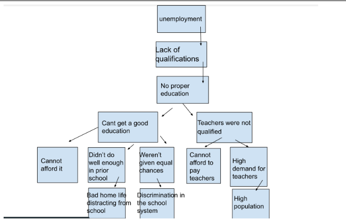
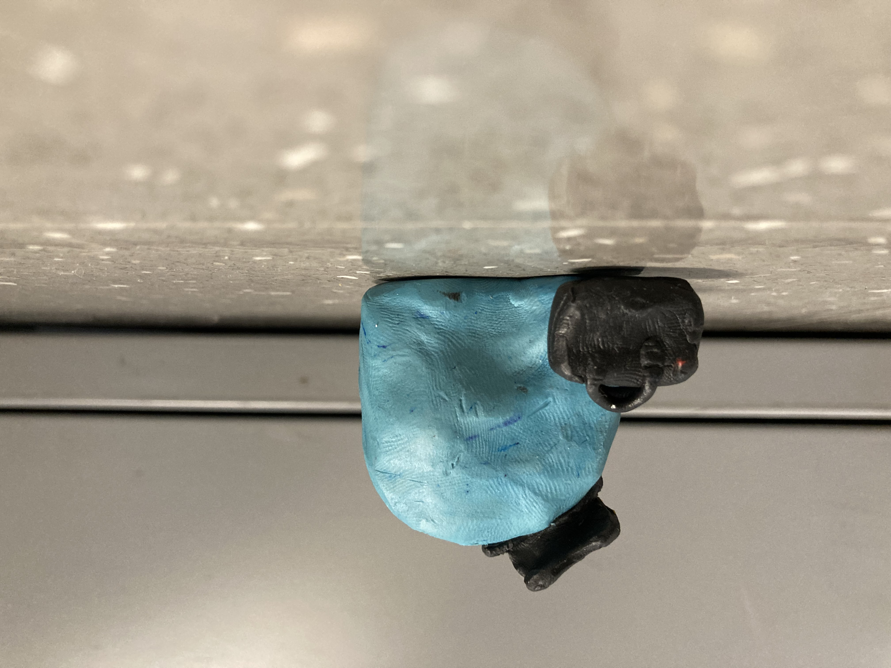
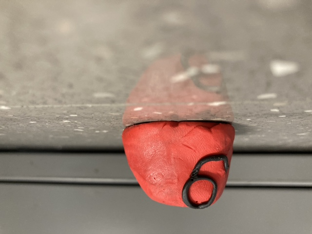
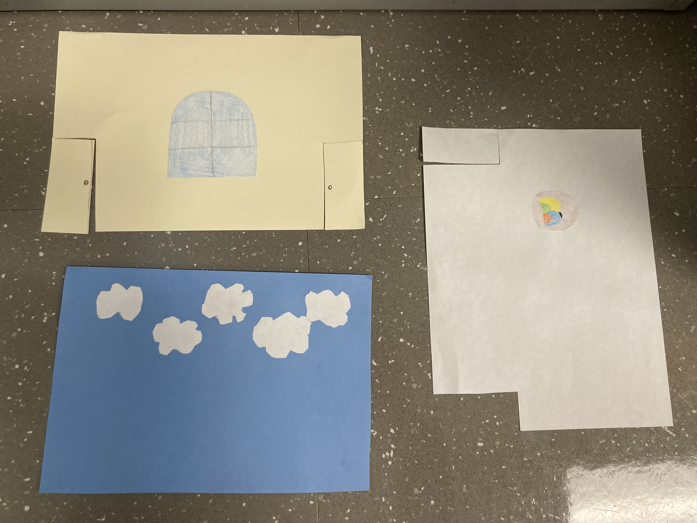
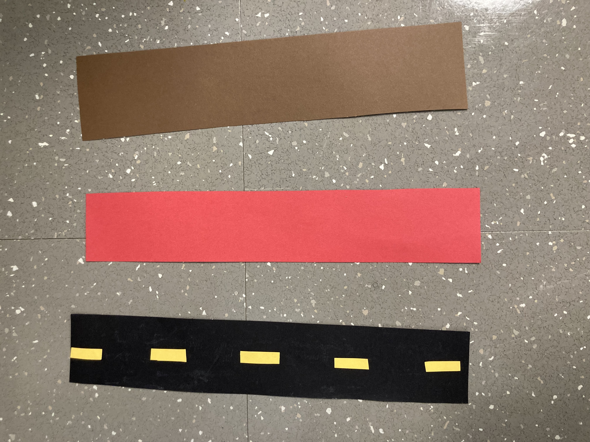

The video above is our short stop motion animation about unemployment. Unemployment is a serious social issue that is tended to be overlooked. This animation takes a comedic yet educational approach on this difficult subject.
 This is a box-and-arrow diagram of the cycle of unemployment. These are just some of the few negative chain effects that come with unemplotment. Our intention for our stop motion animation is to hope someone walks away feeling more educated on the subject while also taking some of the tension off the topic and making the animation less tense with it's comedic scenes.
  width="450"> As seen in the animation we have our protaganist, Mr. Blobb, and our antagonist, Big CEO. These are the two main characters that we follow throughout the stop motion animation   These two images above are the components that made up our set. We mix and matched different backdrops and floor panels in order to create a variety of differnet scenes and moods.